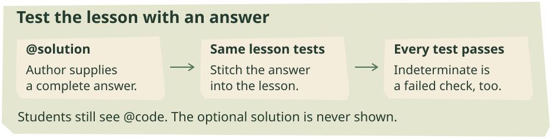
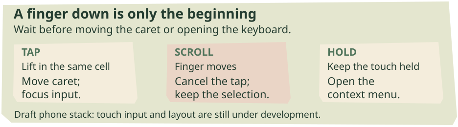
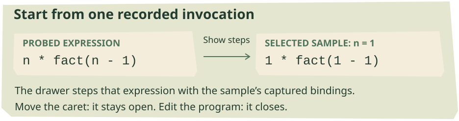
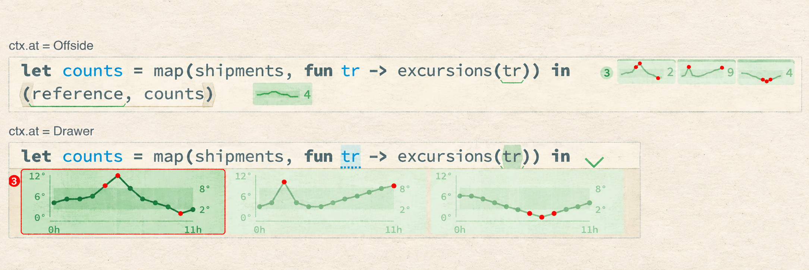
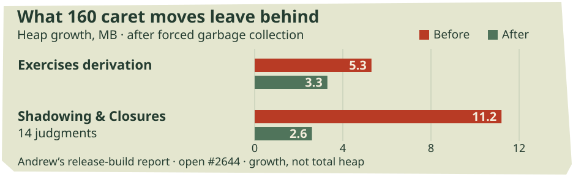
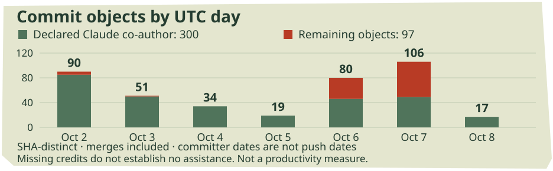

Who tests the test?
A correct solution exposes a broken lesson. Phone editing gets its first stack. Probe views choose their own pictures, and the stepper moves closer to the sample.
In this issue
MERGED INTO DEV / OCTOBER 3
Who tests the test?


The new check runs the author’s reference solution against the lesson’s own tests. Students still begin with the original starter code.
Cristiano Belloni brought a correct solution to Labeled Tuple List Conversions and found that “Updating specific entry” would not pass. His report went further than the symptom: the lesson called string_eq, which was no longer a builtin. Alexander confirmed the diagnosis, and the fix reached dev on October 3. The empty-tuple test had looked healthy only because it never applied the broken predicate. Report and response, #2646
The immediate repair compares labels with ==. For (x=10, y=20, z=30), selecting the label y and doubling its value should produce (x=10, y=40, z=30). The student’s transformation was not the problem; the surrounding test program contained an unbound name. A learner could keep revising correct code without making that test determinate. Repaired lesson
The lasting change is an optional @solution section in lesson files. It is not shown to the student. The test suite replaces the starter code with that reference solution, joins it to the lesson’s tests using the same stitching operation as Tutorial mode, evaluates it, and requires every test to pass. Restoring the old predicate makes this new check fail. Text round-trip checks cover the solution too, so the extra section must survive decoding and re-encoding. Solution check
Only this lesson acquired a solution in the landing. Alexander’s still-open #2647 supplies one for every lesson with tests, leaving untested introductory pages alone. Writing those answers also found mismatches in the prose: a Gradebook hint counted four quizzes where the task has two, another located Semester in the wrong place, and a Folding Lists hint described the wrong test.
The follow-up flags two details in the Probes lessons for Andrew’s review: Grove Name’s hint reverses string_split’s arguments, and The Backpack ends its test section with a stray hole. Both were left unchanged in that PR. Reference solutions can catch an unsolvable task; comparing the prompt, hint and answer still requires reading them together. Review notes
OPEN TEXT-SELECTION PR / LANDED HOTKEY REPAIR
Let readers take the words
The same tutorial report contained another obstacle: Cristiano could not copy the test’s name from the page. Andrew’s open #2649 follows that complaint through browser focus and selection. In Chrome, pressing ordinary text focused the application root, whose focus handler immediately handed control to an old clipboard textarea. The handoff cancelled the selection. Removing that obsolete shim lets the browser keep it.
The CSS policy changes with it. Text becomes selectable by default; controls and editable code opt out. A newly added paragraph therefore behaves like text without needing its own exception. Read-only code examples and the Task Reference retain native selection, and copying removes the invisible zero-width characters used to pad code lines. This is ordinary text selection around the structural editor, not a replacement for its editing model.
Alexander’s review identified section headings and Problems rows that still resisted selection. The branch now lets a drag select those labels without also toggling a section or jumping to a problem. Andrew reports real drag-and-copy checks in headless Chrome, plus unchanged Firefox prose selection. Escape from menus returns focus to the editor; the probe focus keeper releases it when a reader presses elsewhere. Review
One press, one action is now on dev. Alexander’s #2587, covered while open in Issue 003, landed October 7. Refreshing the command palette had accumulated hotkey handlers, so one Introduce press could dispatch repeatedly. The landed fix removes the exact handlers previously registered, preserving other actions that share their key strings.
Correction: Issue 003 attributed #2587 to Matt Keenan. Its author is Alexander Bandukwala.
THREE DRAFT PRS / SIX LATER BRANCH STAGES
A tap is not a small mouse click


Proposed gesture routing: wait for a lift, movement or hold before treating a finger as an editor command. Source-derived diagram of the draft stack.
On a phone, the first obstacle was getting a keyboard at all. Hazel focused a non-editable code div; the browser had no text input to offer. Alexander’s draft #2653 gives each editable cell a hidden textarea and sends focus there. Read-only results and reference cells get no input and summon no keyboard.
Hardware keys keep their existing route. Text arriving through input events, including swipe typing and IME composition, is compared with what has already been sent, then replayed as deletions and insertions one grapheme at a time. Rewriting a composition can therefore replace its earlier spelling instead of appending another copy. The tests cover composition growth and replacement, Backspace and Enter; this is not yet a claim of complete keyboard compatibility.
Touch needs time to declare what it means. In stacked draft #2654, finger-down does not immediately move the caret. Lifting in the same cell completes a tap; movement cancels it, so scrolling can leave the caret and selection alone. Holding opens the context menu. Double-tap selects without triggering browser zoom. #2655 adds the narrow layout: below 600 pixels, the sidebar overlays the editor, while visual-viewport tracking keeps the bottom bar and caret above the iOS keyboard.
Six subsequent branches make desktop actions reachable by touch. A bottom sheet carries the selected term and its context menu. A key bar adds repeating arrows, a Select toggle, contextual Tab actions, undo/redo and a menu key. Expand and shrink walk selection through enclosing terms and back. Long presses expose icon explanations and sample menus. These are stages of the same stack, not six independent features. Action sheet, selection steps
The first three PRs remain draft; the later stages have no matching PRs. Held Backspace still does not repeat, and long-press-then-drag selection remains unfinished. The new controls are available to try on the touch-menu branch preview, with those limits in mind.
OPEN FEATURE BRANCH / MODULAR EDITORS
Inspect the sample where it happened


A recorded invocation supplies the values for the drawer’s starting expression. Source-derived example from the modular-editor stepper work.
Andrew’s modular-editor branch now puts a stepper inside a probe drawer. Right-click a recorded sample of n * fact(n - 1) and choose Show steps: the selected invocation supplies the values, so one sample begins with 1 * fact(1 - 1). This steps that occurrence, rather than restarting the entire program. The active probe retains function values that ordinary samples omit, and evaluation retakes its samples when that capture requirement changes. #2469, sample stepping
The drawer has its own controls, history and close action. Moving the caret leaves it open; editing the program closes it. Tests distinguish those operations from program changes: opening and closing the view create neither edits nor undo steps, and the stepped expression must evaluate to the recorded sample’s value. The additional function capture ends when the probe returns to its ordinary view.
Proofs also move next to their statements. Top-level theorems get proof drawers, including when a theorem is opened as a separate cell. Deeper nested proofs are outside this treatment. It gives the existing proof machinery a place in the focused editor, rather than introducing a new theorem system. Proof drawers
The bottom-bar value switch places the program’s result after its final expression. If execution never reaches that expression, a blank drawer would hide the useful part. An October 8 change instead shows the computation as far as it got, marked STOPPED, with the status “Stopped early.” Scratch and Documentation lose their separate value row and old stepper; Exercises and Tutorial retain the value row. Stopped computation
A focused definition inside a nested module now starts at its own left edge. When its new lines are spliced back into the whole program, they regain the module’s indentation; unchanged pieces are retained intact. Opening a module row shows its members without wrapping braces. These spatial changes and drawers remain on the open feature branch, outside dev. Cell indentation
DRAFT / USER-LIVELITS-VALUE-VIEWS
One value, more than one picture



One Trace view as compact samples and expanded drawer charts. PR-supplied screenshot from the livelit-views draft, lightly restyled; the original is available in the web toggle and companion PDF.
Andrew’s draft #2639 lets a user-defined livelit draw probe samples of its expansion type. A shipment’s Trace can appear as a sparkline instead of a constructor and a list. The shaded band marks the safe temperature range, red dots identify readings outside it, and the final reading stays visible. The view is defined in Hazel beside the program.
One type need not have one picture. View as lists Text and applicable views, so the same trace can use lines or bars. The choice belongs to the probe, covers its samples, survives edits and can override the global Rich Views setting. V opens the picker from the keyboard menu. The branch adds nine Views lessons, from color swatches and diffs to piano rolls and wiring diagrams.
wrap reconstructs a display model from a sampled value; when model and expansion types agree, the value itself can supply the model. An optional second argument, ViewContext, tells view whether it is drawing a Literal, an Offside chip or a Drawer, and whether editing is allowed. One definition can therefore draw both the tiny and expanded charts shown here. Existing one-argument views still work. Rendering contract
Probe views are inert: their event handlers do not rewrite the program. A rich picture of a result and a control that edits a literal may share a definition, but have different permissions. A view too tall for its chip can open in the drawer. This remains a draft against user-livelits, not a dev feature.
Keep the handle visible. The separate draft #2641 gives an open probe drawer a persistent chevron after the caret moves away. Closing it leaves the caret and keyboard focus in place. Term backings stop painting continuation-line indentation; rich chips and their menus align more consistently. The closures of #2633 and #2637 mean their fixes were consolidated here, not merged into dev.
OPEN LIVELIT INTEGRATION / DESIGN FOLLOW-THROUGH
Read the model; edit the controls
Last week’s livelit syntax pane was editable. This week the branch deliberately makes the revealed model read-only. A splice reference names an existing editable region; retyping the whole model could break or redirect that relationship. Selection, copying and navigation remain available, and GUI controls keep changing the model visible below them. This is a change to the interaction we showed in Issue 004, not merely a new coat of paint. October 3 design
The GUI’s own embedded code cells remain editable while the reveal is open. They are deeper splices, so their input must pass through the read-only outer presentation. The repair distinguishes that route from typing directly into the model. It is possible to inspect how a widget stores state without turning the entire state representation into an unrestricted editor.
Editable parameters now have a separate line. They commit after 250 milliseconds of inactivity, and only when the expression evaluates to a value. A partially typed name therefore does not immediately replace a working parameter. An editable head can change the same livelit’s arguments while preserving its model, or switch to another livelit initialized from its own definition. Enter can unproject the use back to code; pausing on half-typed ^sl cannot. Head editor
The integration also makes livelits exportable from modules. Lib.^f(model) can use a member outside its defining module, subject to the signature. Nested paths and parameterized uses are supported. Module aliases carrying livelits, qualified completion and space-triggered initialization are still missing. These changes are on the livelit integration branches; the corresponding modular integration carries parallel work. Module members
One supporting fix did merge into user-livelits: #2640 compares actual probe pins instead of treating every extra sampling target as a changed probe. It carries Matthew’s earlier integration repair into that feature branch. Dev did not have that particular target/pin mismatch.
OPEN PERFORMANCE PRS / NO DEV LANDING YET
What a caret move should leave alone

Fiction department: an expensive response to a very small move. Inspired by the quiet-caret cache repairs.
Moving the caret usually leaves the program unchanged. Several of Andrew’s new performance PRs address work that nevertheless started over. In #2642, completion-buffer cleanup marked the syntax cache stale even when no buffer existed. The fix keeps it, with explicit refreshes for real changes the old blanket invalidation had accidentally covered: syntax-projector models, probe focus and probe settings.
Draft #2638 addresses Tutorial mode’s repeated stitching. One memo cached a partially applied function instead of its final result; another included the caret in a key for a semantic term that only needed the source. The replacement caches completion and parsing on the caret-free segment. Andrew reports main-thread time per move in Harvest Streak falling from 51–52 to 31–34 milliseconds during a twenty-press walk in a release build. Three-line Let Bindings shows little change.
The curried-function mistake appears in four more memos, including program measurement and drawing cards and empty holes. #2643 makes complete argument tuples the keys. The other performance branches change this terrain too: undo-memory work removes the measurement memo, and modular editors measure chunks instead. These overlapping fixes do not add up to a portable headline speedup.
The correctness question is which changes really invalidate the remembered result. Keeping everything forever is wrong; discarding everything on a harmless move can hide that mistake behind sluggishness. The syntax-cache tests now exercise both the quiet move and the projector or probe change that must refresh its contents.
OPEN DEV PRS / SCOPED PERFORMANCE REPORTS
Timing out on a busy page


Author-reported retained heap growth after 160 caret moves and forced garbage collection, release build. Growth above the starting heap, not total memory; #2644 remains open.
Matthew’s #2652 begins with a misleading timeout. Firefox reports that evaluation failed, yet the captured worker request answers in about 0.13 seconds when replayed under Node. The large clothing examples on livelit–modular integration can block Firefox’s main thread for twenty seconds or more. A worker created during that block cannot finish loading; after a block, an expired timer can also run before an already-queued reply.
The proposed fix creates the worker while the page waits for IndexedDB. Acknowledgement and evaluation deadlines check how late their timer fired: more than 250 milliseconds late buys another 500 milliseconds for queued replies, repeating if the page remains blocked. Matthew’s trace then shows one worker, no timeout and drawings appearing. The open dev PR is a robustness fix; ordinary dev slides did not reproduce the failure. Long main-thread stalls remain unresolved. Deadline handling
A cache that kept every visit. Derivation exercises retained every editors record passed to stitch_term, including records created by caret movement and incoming results. Andrew’s open #2644 caps that memo at eight entries. After 160 caret moves and garbage collection, his release-build measurement on Shadowing and Closures falls from 11.2 to 2.6 MB of heap growth. Typing still retains most growth elsewhere: this closes one retention path, not every derivation-memory problem.
Open #2651 separately reuses a module definition’s recorded elaboration instead of analyzing it twice. Matthew sees little benefit on dev’s small examples. On the Polygons slide, the reported Firefox page-load mean changed only from 33.7 to 33.1 seconds, at the edge of measurement noise, despite the CLI improvement. Measurement discussion
EXPERIMENTS / SMALL REPAIRS / INFRASTRUCTURE
Around the branches
The PR is explicitly on the back burner and uses a local replica. Concurrent edits are last-write-wins, the demo accepts open writes, and access control and mainnet operation remain unfinished. It is an experiment in shared state. Reopening its remote-splices dependency does not mean that earlier work has landed.
Keep the spaces already in the file. Andrew’s open #2657 repairs Documentation slides whose indented source loaded flat. The loader still stripped leading spaces from the era when layout supplied indentation. With source spaces now carrying it, that old step deletes the intended layout. The fix preserves spaces and normalizes only line endings. Previously opened slides retain their saved flat copy until Reset Editor; Tutorials and Exercises use another loader.
A less personal preview deployment. Open #2658 proposes replacing the branch-preview workflow’s personal token with a deploy key scoped to hazelgrove/build. The workflow edit alone is insufficient: repository settings must supply the key, and older branches need the updated workflow before the old token can be retired.
Constellation’s front door. The canvas draft adds editable demo prompts and an OpenRouter connection, plus optional credential persistence separate from editor state. A remembered browser key can survive Reset Hazel; settings exports exclude credentials, and connecting does not send a prompt. The demo menu fills the composer without sending its contents. In-week change
OCTOBER 2–8 / A BRANCH CENSUS
The week in numbers


SHA-distinct commit objects by UTC committer date. Green marks declared Claude co-authors; the other segment includes undeclared assistance.
Daily counts as a table
| Date | All | Declared Claude co-author |
|---|---|---|
| 2026-10-02 | 90 | 85 |
| 2026-10-03 | 51 | 50 |
| 2026-10-04 | 34 | 34 |
| 2026-10-05 | 19 | 19 |
| 2026-10-06 | 80 | 46 |
| 2026-10-07 | 106 | 49 |
| 2026-10-08 | 17 | 17 |
Four PR records merged: two into dev and two into feature branches. Dev received the lesson-solution check and palette-hotkey repair. The other destinations were user-livelits, for the probe-pin comparison, and modular-editors, for an outline-scroll fallback in browsers without ::details-content. Those feature landings are not available merely because a reader opens dev. Outline repair
Nineteen PRs opened, six marked draft at retrieval. Across 750 captured remote heads, the census finds 397 SHA-distinct commit objects with committer dates inside the window: 302 non-merge commits and 95 merges. Sixty-eight captured tips have dates in the week. The branch stacks include integration and rebased history; these are not counts of pushes, independent features or productivity.
300 commits declare a Claude/Anthropic co-author, including 296 non-merge commits. Zero carry the OpenAI/Codex/ChatGPT declarations recognized by this census. Separately, 56 contain cryptographic signature headers. The categories can overlap. Credits and signatures describe different properties; neither establishes the fraction of code written by an agent. Assistance without a declaration remains unknown.
Wednesday’s 106 objects form the largest daily group. Last week’s same-method census found 609; the changing branch set and retained integration history make that a repository-activity comparison, not a measure of the significance of the work.
Reporting window: October 2–8, 2026 UTC. Sources retrieved October 9; cutoff dev c04d0bc00a. Benchmarks are attributed author reports. The Views plate is a generated print treatment of a PR-supplied screenshot; its original and the exact diagrams remain available in the companion PDF and web controls.
AI editor: Astra. Reporting audits: Astra agents covering performance, probes and livelits, and phone and workspace features. Cover, comic and light stamp treatment: ImageGen.